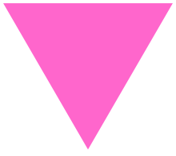

A pink triangle has been a symbol for various LGBTQ identities, initially intended as a badge of shame, but later reclaimed as a positive symbol of self-identity.
In Nazi Germany in the 1930s and 1940s, it began as one of the Nazi concentration camp badges, distinguishing those impr isoned because they had been identified by authorities as homo sexual men, a category that also included bisexual men and t ransgender women.
In the 1970s, it was revived as a symbo l of protest against homophobia, and has since been adopted by the larger LGBTQ community as a popular symbol of LGBTQ pride and the LGBTQ rights movement